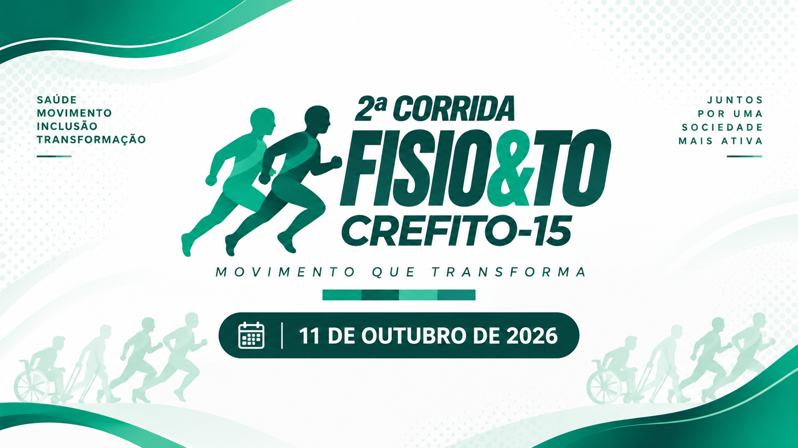
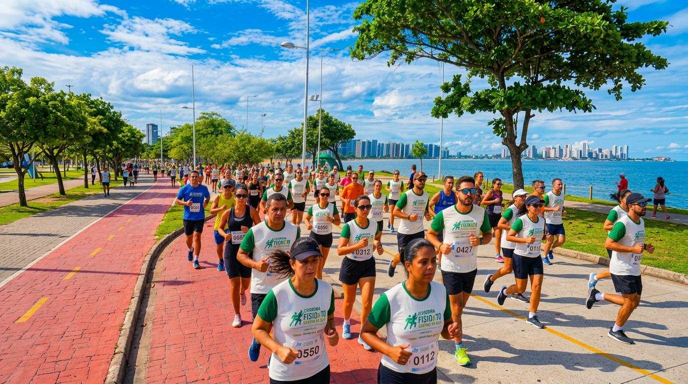
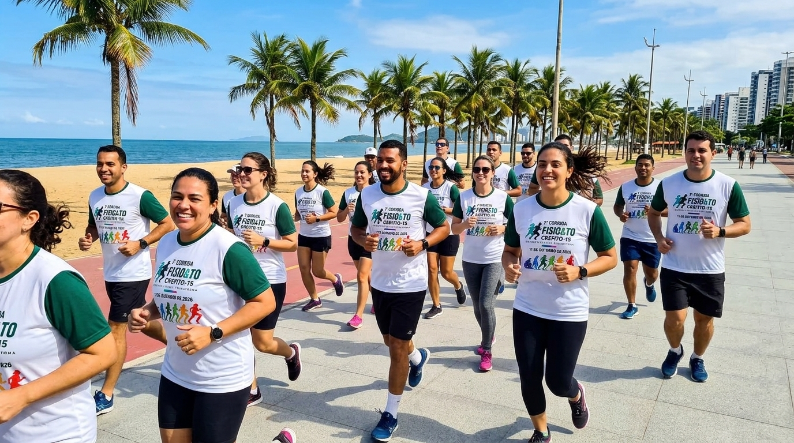
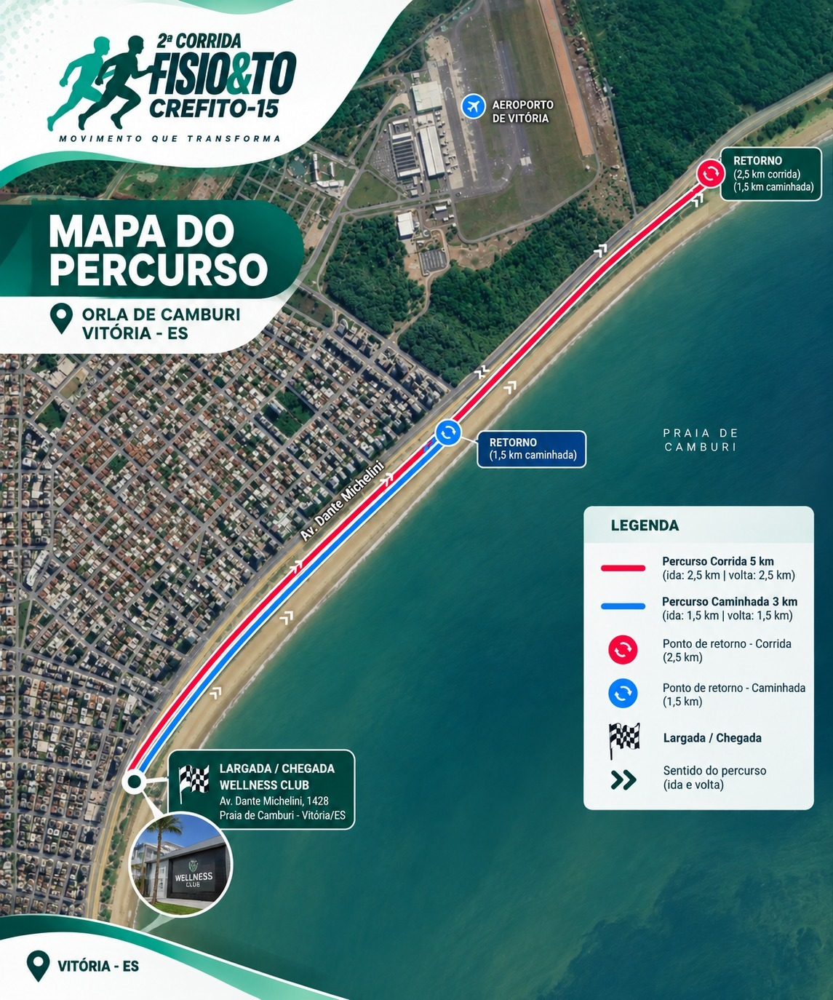

01
Caminhada Participativa
3 kmparticipativa e não competitiva
- Aquecimento
- 05h45
- Largada
- 06h30


Uma iniciativa do Conselho Regional de Fisioterapia e Terapia Ocupacional da 15ª Região.

participativa e não competitiva
competitiva, com premiação
Aquecimento
Largada da Corrida - 5 km
Largada da Caminhada - 3 km
Idade mínima
Profissionais e estudantes de Fisioterapia e Terapia Ocupacional
Estudantes devem anexar comprovante de matrícula válido no ato da inscrição.
Pode encerrar antecipadamente caso o limite de vagas seja atingido.
A inscrição é única, pessoal e intransferível.
Estudantes de Fisioterapia e Terapia Ocupacional
Anexar comprovante de matrícula válidoProfissionais de Fisioterapia e Terapia Ocupacional
Tamanho da camiseta deve ser informado no ato da inscrição; troca não é garantida na retirada do kit.
Disponibilidade dos tamanhos sujeita ao estoque.
Retirada do kit em 10 de outubro de 2026, das 08h às 17h, em Vitória/ES (local exato a ser divulgado nos canais oficiais); não haverá entrega de kit no dia do evento.
Kit pode ser retirado por terceiro mediante documentos do titular e do responsável pela retirada.
Categoria única, independente de sexo ou profissão, para atletas com 60 anos ou mais
Categoria única, independente de sexo ou curso
A caminhada de 3 km é exclusivamente participativa e não entra na classificação para premiação.
Banheiros químicos e guarda-volumes na concentração, largada e chegada
Pontos de hidratação distribuídos ao longo dos percursos
Serviço de ambulância para atendimento emergencial
Seguro Atleta para participantes inscritos
Apoio de segurança e sinalização ao longo dos percursos
A concentração acontece na 2º bolsão de estacionamento da Orla de Camburi, próximo à Wellness Club. Confira o mapa da localização e a imagem do percurso oficial.

A participação no evento segue todas as disposições do regulamento oficial.
Baixar Regulamento Completo (PDF)Transponder descartável (chip)
Frente do corpo, no peito (uso incorreto pode gerar desclassificação)
Sim. Questões de segurança, Determinação de órgãos públicos, Condições climáticas, Necessidade operacional, Motivo de força maior. A comunicação será feita pelos Canais oficiais do CREFITO-15.
Ao concordar com o Regulamento no ato da inscrição, o participante aceita o Termo de Responsabilidade (Anexo I), declarando maioridade, condição física adequada, ciência dos riscos e veracidade das informações.
Site oficial de inscrição, local exato de largada e percursos serão divulgados previamente pelo CREFITO-15. Consulte os Canais oficiais de comunicação do CREFITO-15.
Dúvidas? Fale conosco: eventos@crefito15.org.br